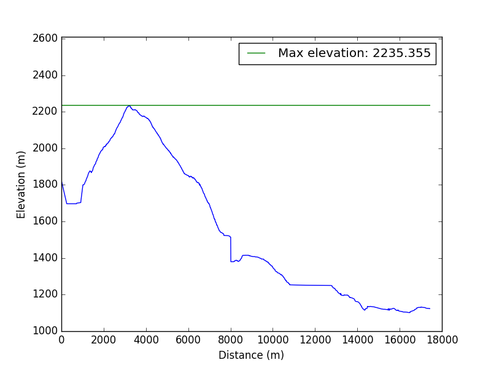

Marmarole Runde - Tappa 4 - Rif. San Marco - Foresta di Somadida
Escursione - 2017-07-06
Mappa
Profilo altimetrico:
Informazioni
| Distanza | Quota Minima | Quota Massima |
|---|---|---|
| 16982.66 | 1101.72 | 2235.355 | Dislivello (qmax - qmin) | Dislivello Positivo | Dislivello negativo |
| 1133.6 | 671 | 1369 | Tempo Totale | Tempo effettivo | Tempo sosta |
| 5:31:21 | 3:48:36 | 1:42:45 |